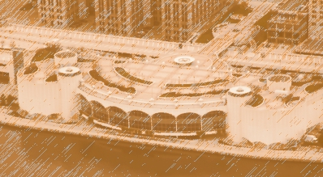

May
is another banner month at the Chamberlain Civic Center, with performances of the award-winning musical,The Producers by the Broadway Touring Company on May 4, 5, and 6. Tickets are going fast, so order yours today.
Celebrate the season on May 11 with the Chamberlain Symphony and their special selection of classical music with Spring themes. The next day, May 12, exercise your mind by attending the Charles Dickens mystery Edwin Drood.
Jazz lovers have a lot to celebrate in May with a visit from The Jazz Masters on the 17th. Then on May 24, enjoy the music of The Duke with An Ellington Tribute performed by the Jazz Company of Kansas City.
Pins, bottles, plates, and chairs are flying at the Chamberlain Civic Center in May. The Taiwan Acrobats return with another amazing performance on Sunday, May 13. On May 20, the Madtown Jugglers get into the act with their unique blend of comedy, juggling, and madness.
Enjoy a classical brunch every Sunday afternoon with music provided by the Carson Quartet. Seating is limited, so please reserve your table.